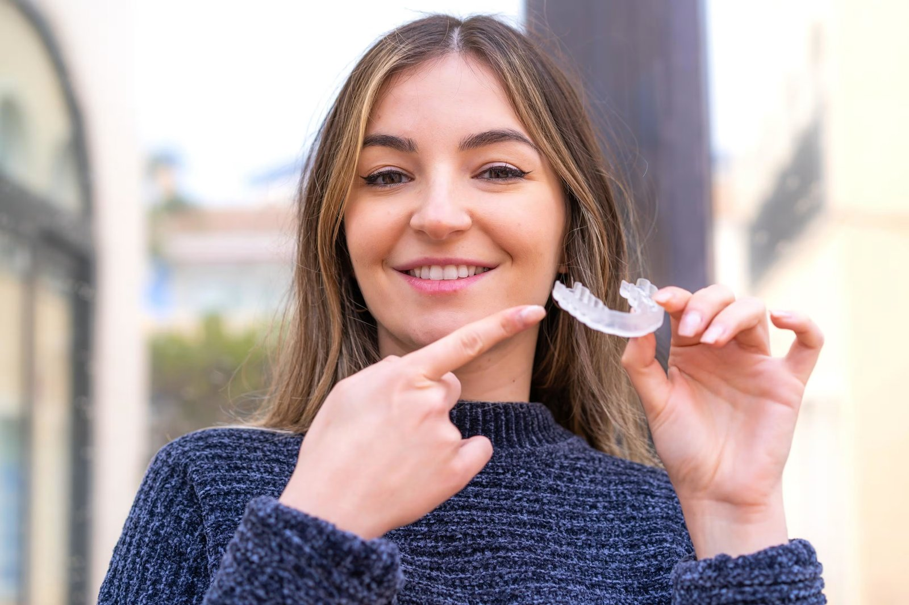

If you've spent years thinking about straightening your teeth but couldn't picture yourself wearing traditional metal braces to a client meeting or a first date, you are not alone. Invisalign treatment for adults has become one of the most requested orthodontic treatments in the country, and for good reason. But before committing to any treatment plan, most adults want the same three answers: what is the actual cost of Invisalign, how long does treatment really take, and is it worth it? At Dante Gonzales Orthodontics, we walk every patient through the full picture — cost of Invisalign, treatment length, insurance coverage, and realistic outcomes — so you can decide with confidence rather than guesswork.
What Is Invisalign Treatment?
Invisalign is a clear aligner treatment that uses a series of custom-made, medical grade thermoplastic polymers trays to gradually move teeth into proper position without metal brackets or metal wires. Unlike traditional braces, Invisalign aligners are nearly invisible during everyday interactions, removable for eating and cleaning, and built from a custom treatment plan designed specifically around your bite, jaw alignment, and smile goals. Treatment begins with a consultation and a 3D digital imaging scan of your teeth, which your Invisalign provider uses to map out exactly how many aligners you'll need and how your teeth will move from your current smile to your new smile.
How Much Does Invisalign Cost for Adults?
The cost of Invisalign is one of the first questions almost every adult patient asks, and the honest answer is that the exact price depends on multiple factors specific to your case.
| Cost Factor | Typical Range | What Affects the Actual Cost |
|---|---|---|
| National average cost | $3,000–$8,000 | Case complexity, geographic location, provider |
| U.S. average total cost | Approximately $5,108 | Length of treatment, number of aligners needed |
| Monthly payment (financed) | $100–$400 per month | Down payment amount, financing options, remaining balance |
| Insurance contribution | $1,000–$3,500 | Your specific dental insurance coverage |
Invisalign treatment costs can be comparable to or even higher than traditional braces, particularly for complex alignment issues that require more aligners over a longer treatment duration. For patients with minor crowding, minor corrections, or minor adjustments, the total treatment cost tends to land on the lower end of the range. Complex cases involving significant bite correction or complex alignment issues generally require more office visits, a longer treatment time, and a higher total investment.
It's worth noting that traditional braces typically cost within a similar range, so the choice between clear aligners and traditional metal braces often comes down to lifestyle, treatment preferences, and how a patient's teeth require correction rather than cost alone.
Payment Options and Financing
No one should have to choose between a straighter smile and their monthly budget. Most Invisalign providers, including Dante Gonzales Orthodontics, offer flexible payment options so treatment fits your financial situation:
- Payment plans with manageable monthly installments spread across the length of treatment
- Down payment plus remaining balance structured around your budget
- Health savings account (HSA) funds, which can typically be applied toward orthodontic treatment
- Flexible spending account (FSA) dollars, another pre-tax option many patients use to help pay for Invisalign
- Flexible payment options through in-house or third-party financing, often with little to no interest
Does Dental Insurance Cover Invisalign?
Many dental insurance plans now treat Invisalign the same way they treat traditional braces, since Invisalign is classified as an orthodontic treatment rather than a purely cosmetic procedure. Most dental insurance plans that include orthodontic benefits will apply that same benefit toward Invisalign clear aligners, typically covering $1,000 to $3,500 of the total treatment cost. That said, insurance coverage varies significantly by plan — some dental insurance plans only cover traditional braces, so it's important to check your specific policy before starting treatment. Our office can help verify your dental insurance coverage and walk you through what your plan will and won't cover.
How Long Does Invisalign Treatment Take?
Treatment duration is the second major factor adults weigh when deciding between Invisalign and traditional braces.
| Case Type | Typical Treatment Length |
|---|---|
| Simple cases (minor crowding, minor corrections) | 6 months or less |
| Average adult cases | 12–18 months |
| Complex cases (significant misalignment) | 18 months or longer |
On average, most adults complete Invisalign treatment in 12 to 18 months, though treatment length can range anywhere from 6 to 18 months depending on the complexity of your case. Throughout treatment, new aligners are typically provided every one to two weeks, gradually and gently moving teeth into their proper position. For consistent results, aligners must be worn for 20 to 22 hours daily — removing them only to eat, drink anything other than water, and practice good oral hygiene.
Fewer office visits are generally required with Invisalign compared to traditional braces, since there are no metal brackets to adjust or metal wires to tighten. Most patients simply check in periodically so their Invisalign provider can confirm the treatment plan is on track and provide the next set of aligners.
After active treatment ends, retention is necessary to prevent teeth from shifting back into their original position — a step that applies to both Invisalign and traditional braces alike.
Invisalign vs. Traditional Braces for Adults
| Feature | Invisalign Aligners | Traditional Metal Braces |
|---|---|---|
| Appearance | Nearly invisible | Visible metal brackets and wires |
| Removability | Removable for eating and cleaning | Fixed to the teeth for full treatment |
| Office visits | Fewer visits needed | More frequent adjustments |
| Best for | Minor to moderate cases | Minor to complex alignment issues |
| Oral hygiene | Easier to maintain good oral hygiene | Requires more effort around brackets |
| Cost | Comparable to traditional braces | Comparable to Invisalign |
Traditional braces remain the better option for some complex alignment issues, since metal brackets and wires can exert more targeted force in certain difficult cases. However, for the majority of adult patients dealing with a crooked smile, minor crowding, or bite misalignment, Invisalign can effectively treat the issue while fitting far more discreetly into a professional or social lifestyle.
Is Invisalign Worth It for Adults?
For most adults, the answer comes down to what you value most in your treatment experience. Invisalign is worth considering if:
- You want a straighter smile without the visibility of traditional braces
- Your dental issues involve minor crowding, spacing, or bite misalignment rather than highly complex alignment issues
- You're willing to commit to wearing aligners 20 to 22 hours daily and practicing good oral hygiene throughout treatment
- You want fewer office visits and more flexibility in your day-to-day life
Straightening teeth isn't just cosmetic. Misaligned teeth can make it harder to maintain good oral hygiene, increasing the risk of tooth decay and gum disease over time. By moving teeth into proper position, Invisalign treatment supports long-term oral health in addition to giving patients a straighter smile and greater confidence.

Start Your Invisalign Journey with Dante Gonzales Orthodontics
Every treatment plan starts with an honest conversation about your teeth, your goals, and your budget. At Dante Gonzales Orthodontics in Dublin and Tracy, CA, we evaluate your bite, review your dental insurance coverage, and design a custom treatment plan so you know the full cost, the expected treatment duration, and what to expect at every step — before you commit to starting treatment.
Frequently Asked Questions (FAQs)
1. Is $5,000 a lot for Invisalign?
Not necessarily. $5,000 falls close to the national average cost of Invisalign, which typically ranges from $3,000 to $8,000. The actual cost within that range depends on the complexity of your case, treatment duration, and your specific insurance coverage.
2. What do I wish I knew before getting Invisalign?
Most patients say they wish they had understood the discipline required — wearing aligners 20 to 22 hours daily is essential for treatment to work as planned. Patients also benefit from knowing upfront how many aligners their treatment plan involves and what payment options, like a health savings account or flexible spending account, are available to help pay for Invisalign.
3. Is it worth getting Invisalign at 40?
Yes. Age is not a barrier to a successful Invisalign treatment experience. As long as your teeth and gums are healthy, Invisalign can effectively treat many of the same alignment issues in adults over 40 as it does in younger patients.
4. What is the 30-minute rule for Invisalign?
The 30-minute rule refers to waiting at least 30 minutes after eating before putting your aligners back in, and avoiding hot beverages while wearing them, since heat can warp the aligner material.
5. Is it worth it to get Invisalign as an adult?
For most adults dealing with a crooked smile, minor crowding, or bite misalignment, Invisalign offers a discreet, removable, and effective treatment option that fits into a professional lifestyle. Complex alignment issues may still require traditional braces, which is why a consultation with an Invisalign provider is the best starting point.
6. Is 35 too old for Invisalign?
No. There is no upper age limit for Invisalign treatment. Many adult patients in their 30s, 40s, 50s, and beyond successfully complete treatment and achieve a straighter smile.
7. Will insurance cover Invisalign for adults?
Many dental insurance plans cover Invisalign the same way they cover traditional braces, often contributing $1,000 to $3,500 toward the total treatment cost. Insurance coverage varies by plan, so it's important to verify your specific benefits before starting treatment.
8. How much is 4 months of Invisalign?
Costs are typically based on the full treatment plan rather than a monthly rate, but if financed, monthly payments generally range from $100 to $400, meaning four months of payments could total roughly $400 to $1,600 depending on your plan and down payment.
9. What is the cheapest you can get Invisalign for?
Simple cases involving minor corrections may be treated for costs on the lower end of the national average, sometimes starting around $3,000, though the exact price depends on your provider, location, and the complexity of your dental issues.
10. How much does 1 year of Invisalign cost?
Since most adult treatment plans run between 12 and 18 months, a full year of Invisalign often falls within the broader $3,000 to $8,000 total treatment cost range, rather than being billed strictly on a per-year basis.
Ready to start your smile journey?
Book a complimentary consultation with Dr. Dante Gonzales in Dublin or Tracy, CA. We will review your case and map out a clear, personalised treatment plan.
Request ConsultationThis article is for general education and is not a substitute for a professional orthodontic evaluation. Treatment recommendations and outcomes vary from person to person.